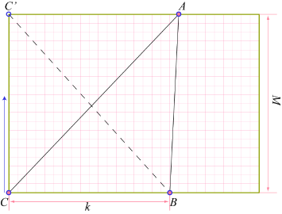

This problem was originally in the form of a little puzzle: For how many numbers is the area possible? The answer is that there are MN such numbers, for any integer 0 < A ≤ MN, we can find a triangle with area A/2 formed by integer points on the graph paper.
The following picture gives the key step in the proof, as well as a solution to our problem.
Assume the integer part of A/M is k, we have kM ≤ A ≤ (k+1)M. Denote S(XYZ) the area of triangle ΔXYZ. Clearly 2S(ABC) = kM and 2S(ABC') = (k+1)M. Now take a point C* from your pocket, put it on C, and move it up towards C', one unit at a time. What can we say about the quantity 2S(ABC*)?
Putting these together, the simple conclusion is that 2S(ABC*) will hit every integer between kM and (k+1)M, including A.
(1) For the careful readers, there is one more thing we did not prove yet. There is no way to form a triangle on the graph paper with an area bigger than MN/2. Find a simple reason for this.
(2) We argued that 2S(ABC*) must hit A because it will hit every integer between kM and (k+1)M. Reason directly that, while C* is moving upward, S(ABC*) will increase by 0.5 every time C* moves one unit higher.